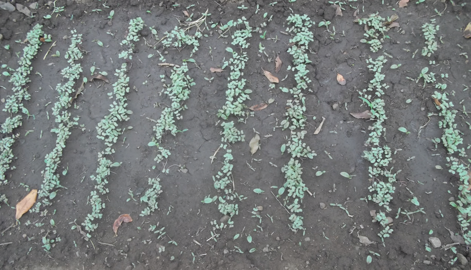

by customers. Chinese cabbage seeds can be sown directly in the seedbed. They can also be sown first in a nursery and then transplanted to the seedbed. An average of 5 – 6 kg of seeds (for direct sowing) and 1.2 – 1.7 kg (to be transplanted) can be sufficient per hectare.
Direct sowing of Chinese cabbage:
Seeds of Chinese cabbage can be directly sown in the field using the dibbling method. Place 2 - 3 seeds in each hole, 25 -35 cm apart between holes and 30 - 40 cm apart between rows. This depends on the type of Chinese cabbage. Keep the seedbed moist by watering. When the seedlings are about 6 - 10 cm tall, thin them out to leave only one plant per hole. Also, fill in gaps where seeds did not grow.Planting Chinese cabbage by transplanting:
First, prepare your nursery bed well. Drill shallow furrows about 25- 30 cm apart. Sow seeds by drilling thinly and covering them with a thin layer of soil. Water the nursery lightly and cover it with dry grass mulch to keep the soil moist. Keep watering as needed. Once the seedlings start to grow, remove the grass cover. Place a partial shade about 60 - 100 cm high to protect the seedlings from strong sunlight and heavy rain. It is recommended to grow seedlings in trays as this helps to reduce shock to the plants during transplanting. Transplanting seedlings from ordinary nurseries with bare roots can cause transplanting shock. Figure 6.2 (a) shows Chinese cabbage seedlings in a soil seedbed. Figure 6.2 (b) shows Chinese cabbage seedlings in tray seedbeds.